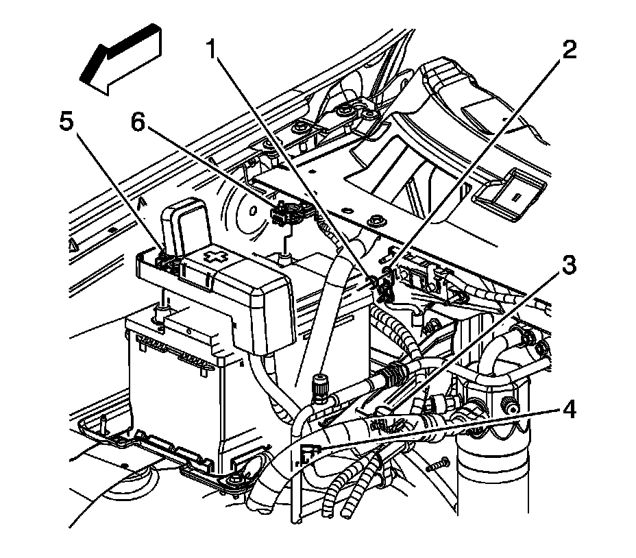
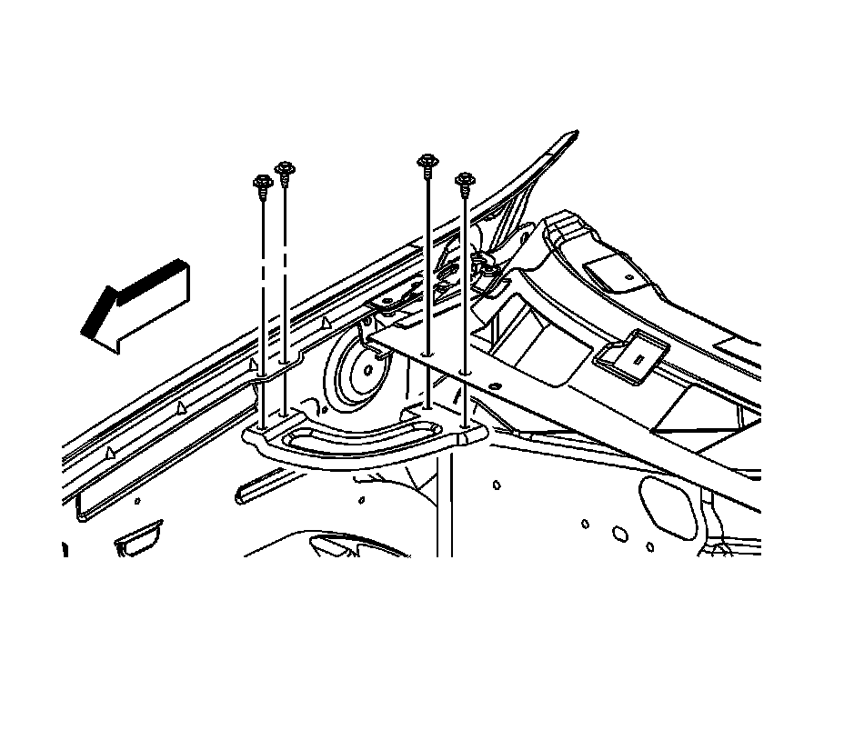
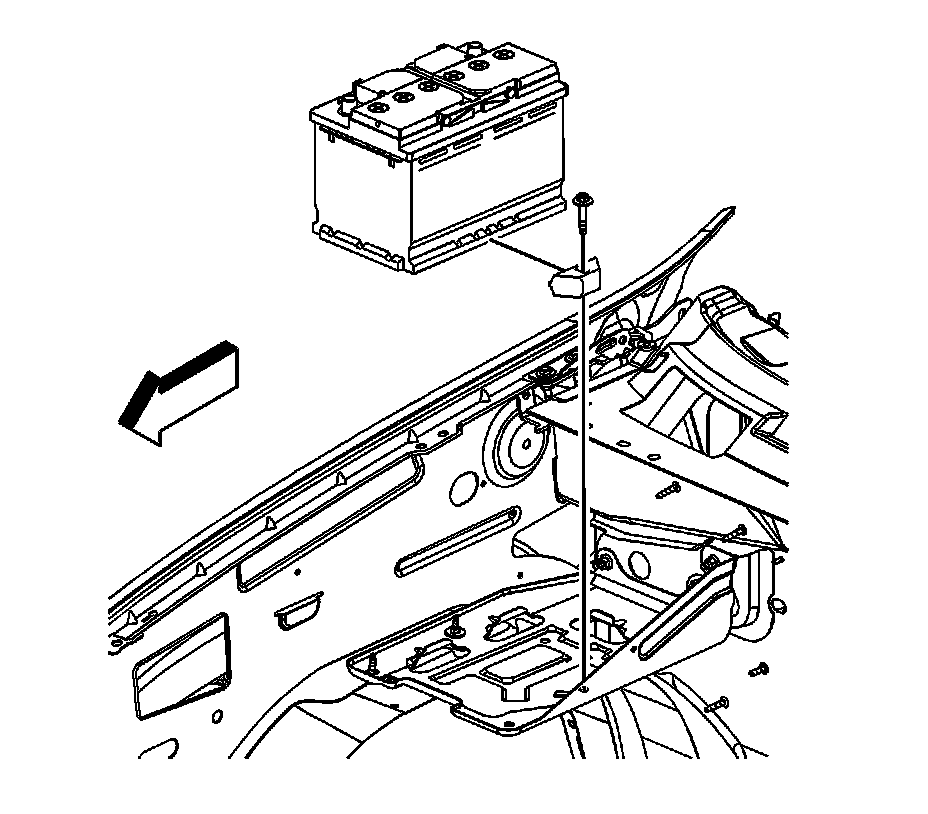

Battery: Service and Repair
BATTERY REPLACEMENT
REMOVAL PROCEDURE
CAUTION: Refer to Battery Disconnect Caution.

1. Disconnect the negative battery cable.
2. Open the starter solenoid cable cover at the positive battery terminal.
3. Loosen the starter solenoid cable nut (5).
4. Remove the starter solenoid cable from the positive battery terminal.
5. Reposition the starter solenoid cable out of the way.

6. Remove the front fender rear upper brace bolts and brace.

7. Remove the battery hold down retainer bolt and retainer.
8. Remove the battery.
INSTALLATION PROCEDURE
1. Install the battery.
2. NOTE: Refer to Fastener Notice.
Install the battery hold down retainer and bolt.
Tighten the bolt to 25 N.m (18 lb ft).
3. Install the front fender rear upper brace and bolts.
Tighten the bolts to 9 N.m (80 lb in).
4. Position the starter solenoid cable to the battery.
5. Install the starter solenoid cable to the positive battery terminal.
6. Tighten the starter solenoid cable nut (5).
Tighten the nut to 17 N.m (13 lb ft).
7. Close the starter solenoid cable cover at the positive battery terminal.
8. Connect the negative battery cable.